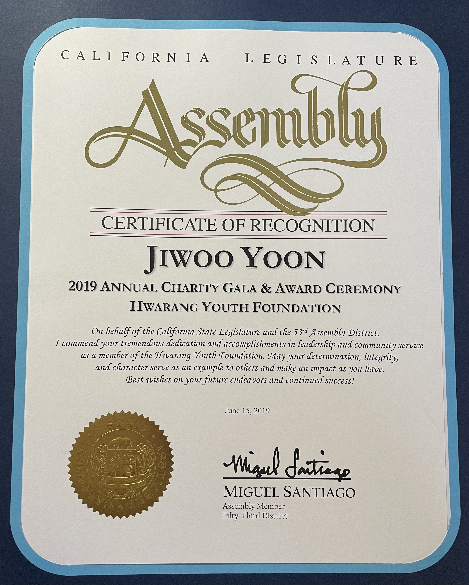

Honors and Awards
Congressional Award
In 2017 I set my sights on the Congressional Award, the highest honor for young civilians. In order to qualify for the award, I had to display great dedication to public service, develop as an individual whether it was through exploring an interest or improving social skills, participate in physical activities, and go on some sort of expedition on my own. I exceeded requirements in terms of public service as I had already racked up over 300 hours of documented service through the Hwarang Youth Foundation. In order to qualify for the personal development category, I completed free Coursera courses on Financial Markets and Python. I tracked every rep for every workout I did to show a gradual increase in strength. Finally, I traveled around South Korea for two weeks to reconnect with my culture and to test my ability to navigate unfamiliar land.
Audubon Youth Environmental Stewards Award
Through Audubon and the Palos Verdes Land Conservancy, I was able to make a direct impact on my community's natural wildlife. Every Saturday morning, I would weed, water, plant, and learn about the types of plants and animals that are endangered and specific to Palos Verdes. In May of 2020, after five years of contributing to the cause, I received the award.
Los Angeles City Council Service Award

California State Legislature Certificate of Recognition
As the secretary of the Palos Verdes Chapter of the Hwarang Youth Foundation, I was responsible for organizing meetings, sending AARs to HQ, creating ideas for fundraising, and supervising members. In 2018 and 2019, I received these awards for contributing to one of the major goals of the Hwarang Youth Foundation, which is to provide free eyecare to citizens of third world countries such as Guatemala. We well exceeded our fundraising goals by maximizing our output from recycling bottles and selling food. We also raised a lot of awareness for the cause by holding big events, such as our annual Vision Concert, a group effort from the entire organization, and smaller events like handing out flyers outside of a grocery store.
Gold President's Volunteer Service Award
In 2017 I dedicated over a hundred hours as a second violin in the Palos Verdes Regional Symphony Orchestra. Every season, the orchestra would set up a concert and perform to all and any members of the community that came.